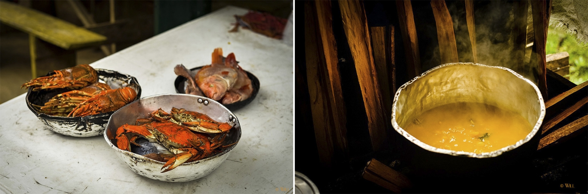
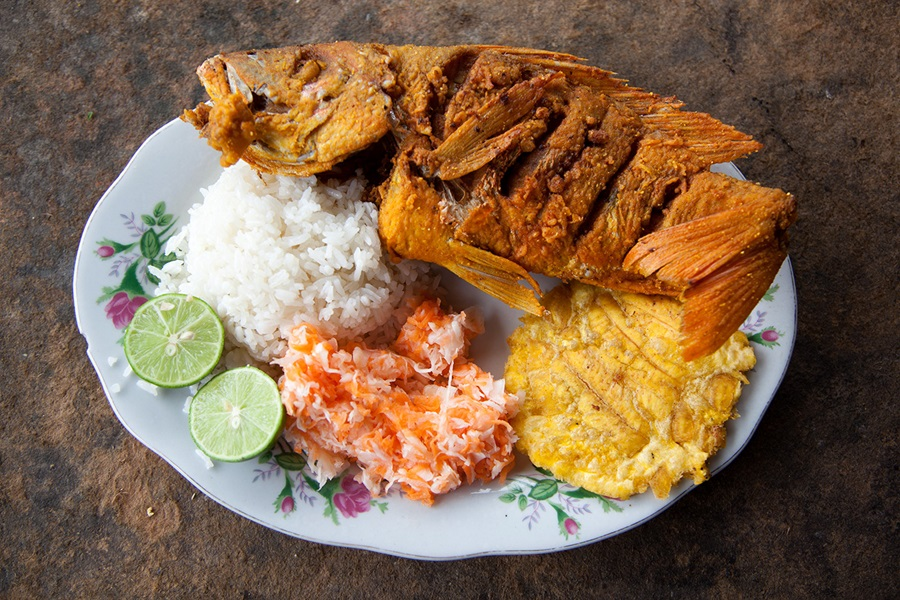
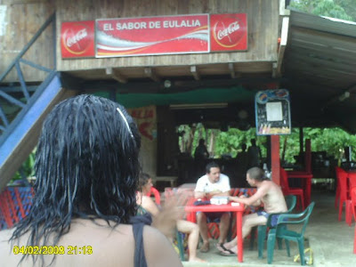

Restaurantes
Dónde comer en San Cipriano
El plato típico es el encocado de camarón, una crema exquisita que lleva yuca, plátano o papa y por lo menos cinco camarones, que se acompaña con arroz, rodajas de tomate y limonada fría. En los fogones de leña también se cocinan exquisitos sancochos de gallina, pescados, mariscos y pollo. Ahí no termina el paseo. Se puede regresar al río cuantas veces quiera o pegarse una bailadita en algunas de las discotecas. En San Cipriano no hay horarios.
Zona de Restaurantes

Platos esquisitos


Las Delicias de Heulalia

Lo mejor de Don Halo